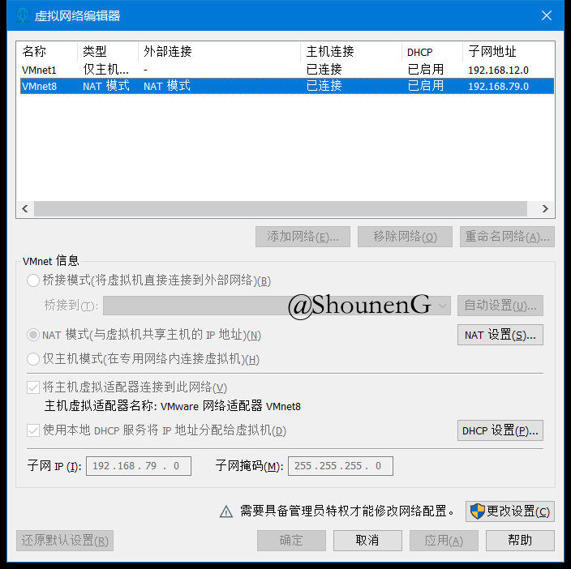

下述内容以 Calico 当前(2019-6-11)最新版本 v3.7 为基础。
k8s集群的安装方式以kubeadm工具安装为前提。
阅读本文前请先阅读以下文章：使用Kubeadm安装k8s集群
目录
本文目的
- 解读 Calico 官网上关于作为 Kubernetes cni 安装 Calico 的部分。
系统要求
在安装Calico之前，有必要先了解安装前提的系统要求，包括: 节点硬件、存储架构、网络基础设施、OS特权、Kubernetes版本、Kubernetes参数、内核依赖。
详细的说明请参见官网。
开通防火墙
我把ens33这个网卡加入到了firewalld的public zone中，这个网卡是nat网卡，打算直接使用nat网卡来安装k8s集群。
[root@k8s-master-01 ~]# firewall-cmd --get-active-zones
public
interfaces: ens33
[root@k8s-master-01 ~]#
- ens33
- 这个是通过vmware workstation创建的NAT网卡。

# Calico networking (BGP)
firewall-cmd --zone=public --add-port=179/tcp --permanent
# Calico networking with Typha enabled
firewall-cmd --zone=public --add-port=5473/tcp --permanent
# flannel networking (VXLAN)
firewall-cmd --zone=public --add-port=4789/udp --permanent修改NetworkManager服务的配置以允许Calico管理网卡
Calico 必须能够在宿主机上管理 cali* 网卡。当 IPIP 被启用时(默认)，Calico 还需要能够管理 tunl* 网卡。
注意: 许多Linux发行版都安装了 NetworkManager。默认情况下 NetworkManager 不允许 Calico 管理网卡。如果你的节点有 NetworkManager，在安装 Calico 之前，你需要按照这个步骤去防止 NetworkManager 控制 Calico 网卡。
NetworkManager 会篡改 default namespace 中的网卡的路由表，而这些路由表将要被 Calico 的虚拟网卡链接到容器。这会干扰 Calico agent 导致不能正确路由。
创建这个配置文件在 /etc/NetworkManager/conf.d/calico.conf，用来防止 NetworkManager 去干扰网卡:
[keyfile]
unmanaged-devices=interface-name:cali*;interface-name:tunl*运行Calico的方式
大致上来说，Calico 有以下三种使用场景:
- 安装Calico作为策略(policy)和网络(networking)(推荐用法)。
- 安装Calico作为策略(policy)和flannel作为网络(networking)。
- 安装Calico作为策略(policy)(进阶用法)。
注意: 策略是指Kubernetes的网络策略(network policy)。
安装Calico作为策略(policy)和网络(networking)(推荐用法)
Calico的数据存储(datastore)有2种方式，一个是使用 Kubernetes API；一个是使用etcd。
在使用不同数据存储和集群规模不同的情况下，安装配置的过程会有所不同:
使用Kubernetes API作为数据存储–少于50个节点的情况
1. 先下载Calico的manifest文件。
curl https://docs.projectcalico.org/v3.7/manifests/calico.yaml -O
2. 根据使用 kubeadm 进行 k8s 集群初始化时传递的 --pod-network-cidr 参数，或许需要修改 calico.yaml。
–pod-network-cidr 这个参数是用来给
controller-manager用作自动分配pod子网(用作给每个node上的pod分配IP address)。
根据官方文档，如果在初始化时没有指定此参数，则不会自动分配pod子网。
另外在初始化时，要根据节点本身的网卡IP地址和将要使用的pod网络插件来指定合理的--pod-network-cidr的数值。
你的
pod网络绝对不能和宿主机(节点)的任何网络重叠，否则将会产生问题。如果你发现你的网络插件的默认pod网络和你的一些宿主机网络冲突，你应该在kubeadm初始化时通过--pod-network-cidr传递一个合适的CIDR，并且替换网络插件的YAML文件中的相应的值。
以下是我准备用来安装 kubernetes master(control-plane with etcd)的 vmware 虚拟机(CentOS7)的IP信息。
[root@k8s-master-01 ~]# ip address show
1: lo: <LOOPBACK,UP,LOWER_UP> mtu 65536 qdisc noqueue state UNKNOWN group default qlen 1000
link/loopback 00:00:00:00:00:00 brd 00:00:00:00:00:00
inet 127.0.0.1/8 scope host lo
valid_lft forever preferred_lft forever
inet6 ::1/128 scope host
valid_lft forever preferred_lft forever
2: ens33: <BROADCAST,MULTICAST,UP,LOWER_UP> mtu 1500 qdisc pfifo_fast state UP group default qlen 1000
link/ether 00:0c:29:8a:5d:f6 brd ff:ff:ff:ff:ff:ff
inet 192.168.79.128/24 brd 192.168.79.255 scope global noprefixroute dynamic ens33
valid_lft 1448sec preferred_lft 1448sec
inet6 fe80::e587:6e91:1cee:5ef8/64 scope link noprefixroute
valid_lft forever preferred_lft forever
3: virbr0: <NO-CARRIER,BROADCAST,MULTICAST,UP> mtu 1500 qdisc noqueue state DOWN group default qlen 1000
link/ether 52:54:00:e0:fa:4c brd ff:ff:ff:ff:ff:ff
inet 192.168.122.1/24 brd 192.168.122.255 scope global virbr0
valid_lft forever preferred_lft forever
4: virbr0-nic: <BROADCAST,MULTICAST> mtu 1500 qdisc pfifo_fast master virbr0 state DOWN group default qlen 1000
link/ether 52:54:00:e0:fa:4c brd ff:ff:ff:ff:ff:ff
5: docker0: <NO-CARRIER,BROADCAST,MULTICAST,UP> mtu 1500 qdisc noqueue state DOWN group default
link/ether 02:42:1e:9f:2c:14 brd ff:ff:ff:ff:ff:ff
inet 172.17.0.1/16 brd 172.17.255.255 scope global docker0
valid_lft forever preferred_lft forever
You have new mail in /var/spool/mail/root然后看一下 calico.yaml 中的 CIDR 这个环境变量的设置。
# The default IPv4 pool to create on startup if none exists. Pod IPs will be
# chosen from this range. Changing this value after installation will have
# no effect. This should fall within `--cluster-cidr`.
- name: CALICO_IPV4POOL_CIDR
value: "192.168.0.0/16"可以看到 Calico 默认的 IPv4 CIDR 和我的虚拟机的主网卡的IP地址网段有重叠部分。Calico 的默认 CIDR – 192.168.0.0/16 包括了我的虚拟机上 public zone 的网卡 ens33 的 192.168.79.128/24。
在网上找了一个私有网络CIDR的规范，决定在以下网段中找一个网段作为--pod-network-cidr:
- 10.0.0.0 - 10.255.255.255（掩码范围需在16 - 28之间）
- 172.16.0.0 - 172.31.255.255（掩码范围需在16 - 28之间）
- 192.168.0.0 - 192.168.255.255 （掩码范围需在16 - 28之间）
于是就决定用这个网段作为 pod CIDR 了: 172.16.0.0/16，所以修改 calico.yaml中上述 CALICO_IPV4POOL_CIDR 的值。
3. 对于多网卡环境下的主机需要配置 IP autodetection methods。
当 Calico 被用作路由，每个 node 必须配置一个 IPv4 地址 和/或者 一个 IPv6 地址，用作 node 间的路由。为了排除节点特定的 IP 地址的配置，calico/node 这个容器可以被配置为自动检测 IP 地址配置。在许多系统中，一个主机上或许会有多个物理网卡，或者可能有多个 IP 地址配置到一个物理网卡。在这些情况下，自动检测模式下会有多个地址可选，所以难以确认正确的地址。
为了改善选择正确地址的过程，Calico 提供了 IP 自动检测的方法，这些方法基于合适的条件给这个选择定义一些限制。
以下部分描述了可用的 IP 自动检测方法。
first-found
first-found方法列举所有网卡 IP 地址然后返回第一个有效网卡上的第一个有效的 IP 地址(基于IP版本和地址的类型)。确切已知的 “local” 网卡会被忽略，例如 docker 网桥。网卡和 IP 地址的顺序根据不同系统会有差异。这个是默认的检测方法。然而，由于这个方法只会作非常简单的假设，强烈推荐要么给节点配置一个特定的 IP 地址(应该是通过给 kubelet 指定参数)，要么使用另外一种检测方法。
e.g.
IP_AUTODETECTION_METHOD=first-found IP6_AUTODETECTION_METHOD=first-foundcan-reach=DESTINATION
can-reach方法使用你的本地路由来决定使用哪个 IP 地址来到达提供的目的地。可以使用 IP 地址或者域名。使用 IP 地址的例子:
IP_AUTODETECTION_METHOD=can-reach=8.8.8.8 IP6_AUTODETECTION_METHOD=can-reach=2001:4860:4860::8888使用域名的例子:
IP_AUTODETECTION_METHOD=can-reach=www.google.com IP6_AUTODETECTION_METHOD=can-reach=www.google.cominterface=INTERFACE-REGEX
interface方法使用提供的网卡正则表达式(golang语法)去列举匹配到的网卡然后返回在第一个匹配到的网卡上的第一个 IP 地址。网卡和 IP 地址的顺序根据不同系统会有差异。网卡 eth0, eth1, eth2 etc. 的有效 IP 地址的例子:
IP_AUTODETECTION_METHOD=interface=eth.* IP6_AUTODETECTION_METHOD=interface=eth.*
4. 适用manifest。
kubectl apply -f calico.yaml